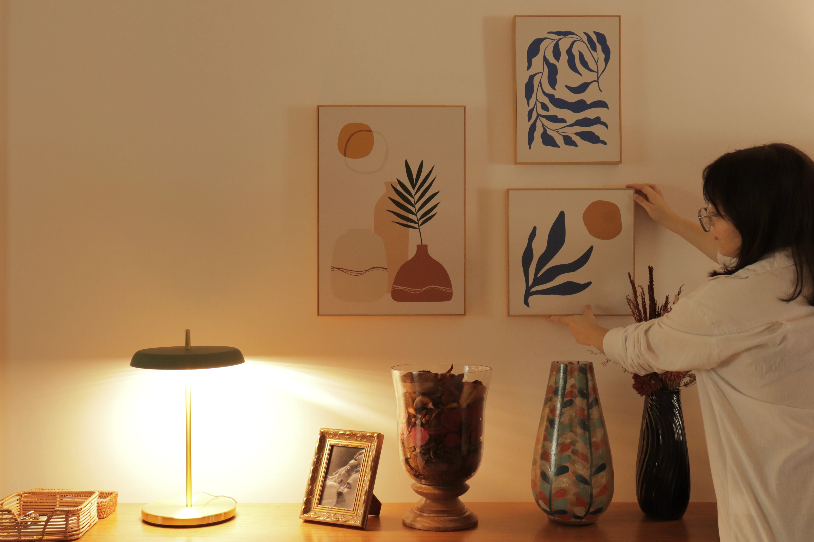
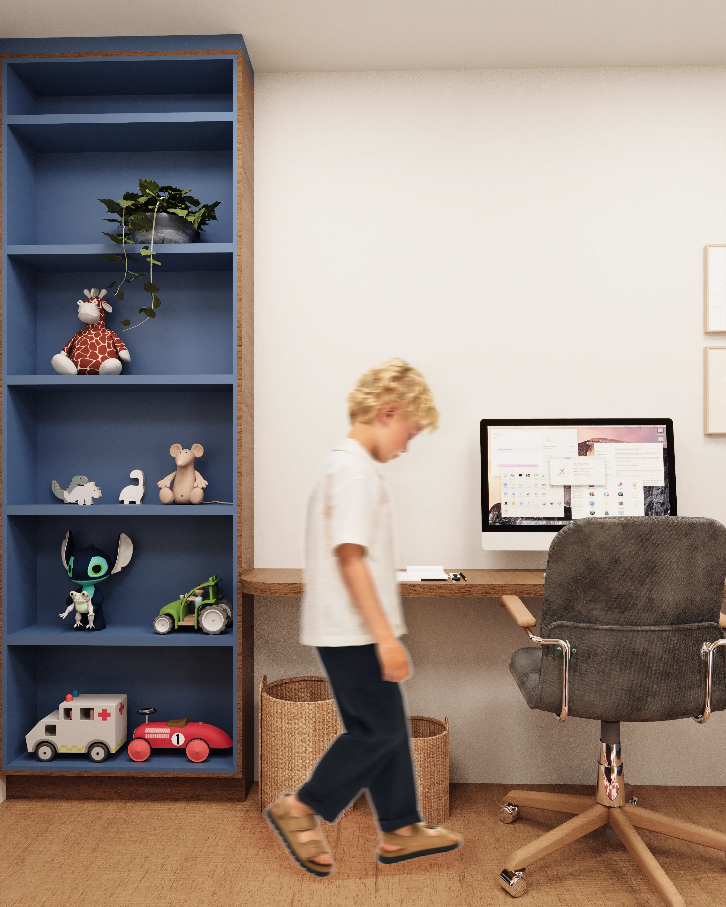
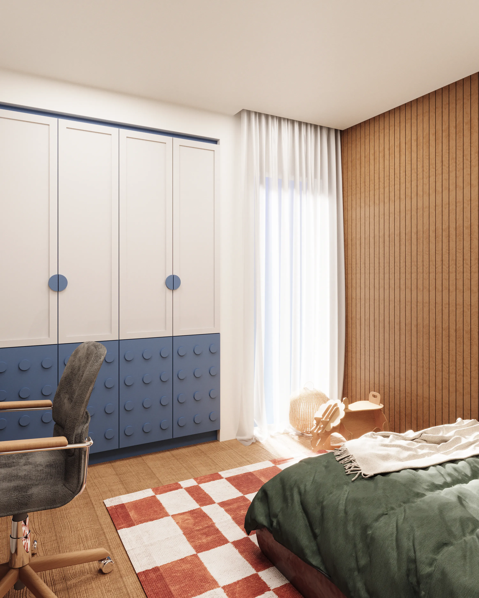

ATENDIMENTO PRESENCIAL
Na Carte Arquitetura, oferecemos serviço completo de arquitetura de forma presencial em Juiz de Fora, Rio de Janeiro e cidades próximas. Nós realizamos visitas ao espaço, reuniões presenciais para alinhar referências e acompanhamento da execução. As reuniões podem ser realizadas no próprio local da reforma ou construção, em um café descontraído ou remotamente, de acordo com o que melhor se encaixa na rotina de cada cliente.
Também oferecemos o serviço de execução de marcenaria, evitando o desgaste de ter que contratar marceneiros externos ou ter falhas de alinhamento entre o projeto e a produção.


ATENDIMENTO REMOTO
Para clientes fora da região, todo o processo acontece à distância: reuniões por vídeo-chamada, apresentação do projeto em 3D e acompanhamento remoto da marcenaria com fornecedores locais.
Mantemos a mesma atenção aos detalhes de um atendimento presencial, com relatórios e atualizações constantes ao longo do projeto.


METODOLOGIA DE PROJETO
Nossa abordagem baseia-se em dois princípios fundamentais: conhecer você de verdade e criar um projeto que reflita essa essência. Começamos entendendo suas expectativas para o espaço e, em seguida, partimos para as primeiras propostas de design. Logo na primeira reunião de apresentação do projeto, mostramos imagens realistas de alta qualidade. O objetivo é que você possa se sentir dentro do novo espaço, observando quais, de fato, serão os materiais aplicados, layout e mobiliário.
Nessa reunião iremos discutir com calma o projeto e realizar todas as alterações necessária para chegar em um design bonito e funcional. Nosso objetivo é criar um espaço que não apenas atenda às suas expectativas, mas as supere, permitindo que você simplesmente chegue, relaxe e crie memórias.